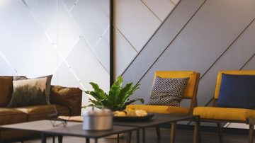

Vocabulario fundamental para describir tu hogar: las habitaciones, los muebles y los electrodomésticos. También aprenderás a usar preposiciones de lugar (in, an, auf, unter...).
| Alemán | Español | Descripción |
|---|---|---|
| das Haus | la casa | Casa independiente |
| die Wohnung | el apartamento / piso | Piso en un edificio — lo más común en ciudades alemanas |
| die WG (Wohngemeinschaft) | el piso compartido | Muy popular entre estudiantes |
| das Zimmer | la habitación / el cuarto | Una sola habitación |
| das Studentenwohnheim | la residencia universitaria | Opción económica para estudiantes |
| das Erdgeschoss (EG) | la planta baja | En Alemania, la planta baja es el EG, no el 1º |
| das erste Stockwerk / der erste Stock | el primer piso | En Alemania = el 2º piso en México |
| Alemán | Español |
|---|---|
| das Wohnzimmer | la sala / salón |
| die Küche | la cocina |
| das Schlafzimmer | el dormitorio / cuarto |
| das Badezimmer / das Bad | el baño |
| die Toilette / das WC / das Klo | el baño / aseo |
| der Flur / der Gang | el pasillo / la entrada |
| das Arbeitszimmer | el estudio / despacho |
| der Keller | el sótano |
| der Balkon | el balcón |
| der Garten | el jardín |
| die Garage | el garaje |
| die Treppe | la escalera |
| Alemán | Español |
|---|---|
| das Bett | la cama |
| der Schrank | el armario |
| der Tisch | la mesa |
| der Stuhl | la silla |
| das Sofa / die Couch | el sofá |
| der Sessel | el sillón / butaca |
| der Kühlschrank | el refrigerador |
| der Herd | la estufa / fogón |
| die Waschmaschine | la lavadora |
| der Fernseher | el televisor |
| das Regal | el estante / la repisa |
| die Lampe | la lámpara |
| der Spiegel | el espejo |
| das Fenster / die Tür | la ventana / la puerta |
En A1 usamos las preposiciones de lugar con Dativ (dónde está algo). Las preguntas son: Wo ist...? / Wo sind...?
| Prep. | Español | Ejemplo con Dativ | Español |
|---|---|---|---|
| in | en / dentro de | Das Buch ist in dem (= im) Regal. | El libro está en la estantería. |
| auf | sobre / encima | Die Tasse ist auf dem Tisch. | La taza está sobre la mesa. |
| unter | debajo de | Die Katze ist unter dem Bett. | La gata está debajo de la cama. |
| neben | al lado de | Der Stuhl steht neben dem Tisch. | La silla está al lado de la mesa. |
| vor | delante de | Das Auto steht vor dem Haus. | El coche está frente a la casa. |
| hinter | detrás de | Der Garten ist hinter dem Haus. | El jardín está detrás de la casa. |
| an | en / junto a / en la pared | Das Bild hängt an der Wand. | El cuadro cuelga en la pared. |
| zwischen | entre | Die Lampe steht zwischen den Büchern. | La lámpara está entre los libros. |
| Frase | Español |
|---|---|
| Ich wohne in einer Wohnung / in einem Haus. | Vivo en un apartamento / en una casa. |
| Meine Wohnung hat 3 Zimmer. | Mi apartamento tiene 3 habitaciones. |
| Die Wohnung ist groß / klein / gemütlich / modern. | El apartamento es grande / pequeño / acogedor / moderno. |
| Ich wohne im dritten Stock. | Vivo en el tercer piso. |
| Das Schlafzimmer ist 15 Quadratmeter groß. | El dormitorio mide 15 metros cuadrados. |
| Mein Lieblingsraum ist das Wohnzimmer. | Mi habitación favorita es la sala. |
| Ich teile die Wohnung mit zwei Mitbewohnern. | Comparto el piso con dos compañeros. |
| Die Küche ist sehr klein / gut ausgestattet. | La cocina es muy pequeña / bien equipada. |
| Alemán | Español | Ejemplo |
|---|---|---|
| putzen | limpiar | Am Samstag putze ich das Bad. |
| aufräumen | ordenar | Ich räume mein Zimmer auf. |
| staubsaugen | aspirar | Er saugt jeden Freitag Staub. |
| Wäsche waschen | lavar la ropa | Ich wasche am Sonntag Wäsche. |
| bügeln | planchar | Ich bügle nicht gern. |
| kochen | cocinar | Wer kocht heute? |
| spülen / abwaschen | lavar los trastes | Nach dem Essen spülen wir. |
| den Müll rausbringen | sacar la basura | Kannst du den Müll rausbringen? |
| das Bett machen | tender la cama | Ich mache jeden Morgen das Bett. |
| die Blumen gießen | regar las plantas | Wer gießt die Blumen im Urlaub? |
| einkaufen | hacer las compras | Ich kaufe einmal pro Woche ein. |
| Alemán | Español | Ejemplo |
|---|---|---|
| hell / dunkel | luminoso / oscuro | Das Wohnzimmer ist sehr hell. |
| groß / klein | grande / pequeño | Die Küche ist klein. |
| ruhig / laut | tranquilo / ruidoso | Die Straße ist laut. |
| modern / alt | moderno / viejo | Das Bad ist modern. |
| gemütlich | acogedor | Mein Zimmer ist gemütlich. |
| teuer / billig | caro / barato | Die Wohnung ist nicht teuer. |
| renoviert | remodelado | Die Küche ist renoviert. |
| zentral | céntrico | Die Wohnung liegt zentral. |
| möbliert | amueblado | Das Zimmer ist möbliert. |
| sauber / schmutzig | limpio / sucio | Die Wohnung ist sauber. |
| Alemán | Español | Ejemplo |
|---|---|---|
| die Straße | la calle | Ich wohne in der Goethestraße. |
| die Hausnummer | el número | Die Hausnummer ist 15. |
| die Postleitzahl | el código postal | Die Postleitzahl ist 73728. |
| der Stock | el piso | Ich wohne im zweiten Stock. |
| das Erdgeschoss | la planta baja | Die Bäckerei ist im Erdgeschoss. |
| der Briefkasten | el buzón | Mein Name steht auf dem Briefkasten. |
| die Klingel | el timbre | Bitte klingeln Sie bei García. |
| Lo correcto | Por qué | No digas |
|---|---|---|
| Ich wohne in einer Wohnung. | en: in + Dativ | Ich wohne in eine Wohnung. ✗ |
| Es gibt einen Balkon. | es gibt pide Akkusativ: einen | Es gibt ein Balkon. ✗ |
| Ich räume auf. | separable: auf va al final | Ich aufräume. ✗ |
| Die Wohnung ist hell. | luminoso: hell | Die Wohnung ist leuchtend. ✗ |
| im zweiten Stock | el piso: im + ordinal | in zwei Stock ✗ |
| Das Bad ist klein. | el baño: das Bad | Der Bad ist klein. ✗ |